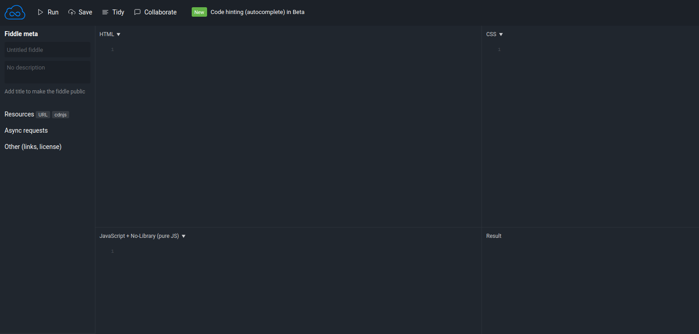

Nous allons nous intéresser à un acteur fondamental du développement web, le couple HTML+CSS (Hyper Text Markup Langage et Cascading Style Sheets).
Dans un premier temps, nous allons exclusivement nous intéresser au HTML. Qu'est-ce que le HTML, voici la définition que nous en donne Wikipedia :
L’Hypertext Markup Language, généralement abrégé HTML, est le format de données conçu pour représenter les pages web. C’est un langage de balisage permettant d’écrire de l’hypertexte, d’où son nom. HTML permet également de structurer sémantiquement et de mettre en forme le contenu des pages, d’inclure des ressources multimédias, dont des images, des formulaires de saisie, et des programmes informatiques. Il permet de créer des documents interopérables avec des équipements très variés de manière conforme aux exigences de l’accessibilité du web. Il est souvent utilisé conjointement avec des langages de programmation (JavaScript) et des formats de présentation (feuilles de style en cascade).
Pour l'instant, nous allons retenir deux éléments de cette définition «conçu pour représenter les pages web» et «un langage de balisage».
Grâce au HTML vous allez pouvoir, dans votre navigateur (Firefox, Chrome, Opera,....), afficher du texte, afficher des images, proposer des hyperliens (liens vers d'autres pages web), afficher des formulaires et même maintenant afficher des vidéos (grâce à la dernière version du HTML, l'HTML5).
HTML n'est pas un langage de programmation (comme le Python par exemple), ici, pas question de conditions, de boucles....c'est un langage de description.
Pour aborder le HTML, nous allons, dans un premier temps utiliser le site jsfiddle.net.
Après avoir lancé votre navigateur web, tapez http://jsfiddle.net/ dans la barre d'adresse.
Vous devriez voir apparaître ceci :
Nous allons pour l'instant uniquement utiliser la fenêtre « HTML » et la fenêtre « Result ».
Écrivez le code HTML suivant :
<h1>Hello World! Ceci est un titre</h1>
<p>Ceci est un <strong>paragraphe</strong>. Avez-vous bien compris ?</p>
Qu'est-ce qui s'affiche dans la fenêtre ?
Comme déjà évoqué ci-dessus, en HTML tout est une histoire de balise que l'on ouvre et que l'on ferme. Une balise ouvrante est de la forme <nom_de_la_balise>, les balises fermantes sont de la forme </nom_de_la_balise>.
En observant attentivement le code, vous devriez forcément remarquer que toute balise ouverte doit être refermée à un moment ou un autre. La balise ouvrante et la balise fermante peuvent être sur la même ligne ou pas, cela n'a aucune espèce d'importance, la seule question à se poser ici est : ai-je bien refermé toutes les balises que j'ai ouvertes ?
Enfin pour terminer avec les généralités sur les balises, il est important de savoir qu'une structure du type :
<balise1>
<balise2>
</balise1>
</balise2>
est interdite, la balise2 a été ouverte après la balise1, elle devra donc être refermée avant la balise1.
En revanche, l'enchaînement suivant est correct :
<balise1>
<balise2>
</balise2>
</balise1>
Notez que dans notre exemple nous respectons bien cette règle « d'imbrication » des balises avec la balise <p> et la balise <strong>.
Il est important de comprendre que chaque balise a une signification qu'il faut bien respecter (on parle de la sémantique des balises). Par exemple le texte situé entre la balise ouvrante et fermante <h1> est obligatoirement un titre important (il existe des balises <h2>, <h3>......qui sont aussi des titres, mais des titres moins importants (sous-titre)). La balise <p> permet de définir des paragraphes, enfin, la balise <strong> permet de mettre en évidence un élément important.
Vous devez aussi savoir qu'il existe des balises qui sont à la fois ouvrantes et fermantes (<balise/>) : un exemple, la balise permettant de sauter une ligne, la balise <br/> (balise qu'il faut d'ailleurs éviter d'utiliser par différentes raisons que nous n'aborderons pas ici).
Il est possible d'ajouter des éléments à une balise ouvrante, on parle d'attribut. Une balise peut contenir plusieurs attributs :
<ma_balise attribut_1= "valeur_1" attribut_2="valeur_2">
Il existe beaucoup d'attributs différents, nous allons nous contenter de 2 exemples avec l'attribut id (id pour identifiant) et class. Nous verrons l’intérêt de ces attributs dans l'activité suivante.
Écrivez le code HTML suivant :
<h1>Ceci est un titre</h1>
<h2 class="titre_1">Ceci est un sous titre</h2>
<p id="para_1">Ceci est un <strong>paragraphe</strong>. Avez-vous bien compris ?</p>
Qu'est-ce qui s'affiche dans la fenêtre ?
Le HTML n'a pas été conçu pour gérer la mise en page (c'est possible, mais c'est une mauvaise pratique). Le HTML s'occupe uniquement du contenu et de la sémantique, pour tout ce qui concerne la mise en page et l'aspect « décoratif » (on parle du « style » de la page), on utilisera le CSS (Cascading Style Sheets).
Dans JSFIDDLE, il est possible d'écrire du CSS dans la fenêtre en haut à gauche.
Écrivez le code HTML suivant :
<h1>Ceci est un titre</h1>
<h2>Ceci est un sous titre</h2>
<p>Ceci est un <strong>paragraphe</strong>. Avez-vous bien compris ?</p>
Écrivez le code CSS suivant :
h1
{
text-align: center;
background-color: red;
}
h2
{
font-family: Verdana;
font-style: italic;
color: green;
}
Qu'est-ce qui s'affiche dans la fenêtre ?
Dans l'exemple du "À faire vous-même 3", les propriétés « text-align » et «background-color» seront appliquées au contenu de toutes les balises de type h1 (avec respectivement les valeurs «center» et «red»).....
Écrivez le code HTML suivant :
<h1>Ceci est un titre</h1>
<h2>Ceci est un sous titre</h2>
<p id="para_1">Ceci est un <strong>paragraphe</strong>. Avez-vous bien compris ?</p>
Écrivez le code CSS suivant :
#para_1
{
font-style: italic;
color: green;
}
Qu'est-ce qui s'affiche dans la fenêtre ? Que remarquez-vous ?
Il est donc possible de cibler un paragraphe et pas un autre en utilisant l'id du paragraphe (en CSS l'id se traduisant par le signe #).
Il est aussi possible d'utiliser l'attribut class à la place de l'id. Dans le CSS on utilisera le point . à la place du #.
La différence entre "id" et "class" n'est pas très importante.
L'attribut "class" permet de donner le même nom à plusieurs reprises dans une même page.
Si nous avions eu un 3e paragraphe, nous aurions pu avoir :<p class="para_1">Voici un 3e paragraphe</p>, mais nous n'aurions pas pu avoir : <p id="para_1"> Voici un 3e paragraphe </p>, car le nom para_1 a déjà été utilisé pour le 1er paragraphe.
JSFIDDLE est un très bel outil, mais il ne peut pas être utilisé pour la réalisation d'un vrai site internet (ou d'une vraie application web).
Nous allons créer 2 fichiers : un fichier qui contiendra du HTML (index.html) et un fichier qui contiendra du CSS (style.css).
À l'aide d'un éditeur de texte, créer un nouveau fichier.
Sauvegardez-le en précisant son nom, par exemple "index.html".
Écrivez le code suivant dans votre éditeur de texte (sans oublier de sauvegarder quand vous avez terminé) :
<!doctype html>
<html lang="fr">
<head>
<meta charset="utf-8">
<title>Voici mon site</title>
</head>
<body>
<h1>Hello World! Ceci est un titre</h1>
<p>Ceci est un <strong>paragraphe</strong>. Avez-vous bien compris ?</p>
</body>
</html>
Testez votre code à l'aide d'un navigateur web (Firefox ou Chrome) en “double-cliquant” sur le fichier index.html
Dans l'exemple du "À faire vous-même 5", vous reconnaissez le code se trouvant entre les balises <body> :
<body>
......
</body>
Tout votre code HTML devra se trouver entre ces 2 balises.
Le reste des balises devraient vous êtes inconnues. Passons-les en revue :
La première ligne (<!doctype html>) permet d'indiquer au navigateur que nous utiliserons la dernière version du HTML, le fameux HTML5.
La balise <html> est obligatoire, l'attribut lang="fr" permet d'indiquer au navigateur que nous utiliserons le français pour écrire notre page.
Les balises <head>...</head> délimitent ce que l'on appelle l'en-tête. L'en-tête contient, dans notre exemple, 2 balises : la balise <meta charset="utf-8"> qui permet de définir l'encodage des caractères (utf-8) et la balise <title> qui définit le titre de la page (attention ce titre ne s'affiche pas dans le navigateur, ne pas confondre avec la balise <h1>).
Toujours à l'aide d'un éditeur de texte, vous allez créer un fichier qui va contenir le CSS de notre page (par exemple style.css). Complétez ce fichier à l'aide du code suivant :
h1
{
text-align: center;
background-color: red;
}
p
{
font-family: Verdana;
font-style: italic;
color: green;
}
Pour l'instant notre CSS ne sera pas appliqué à notre page, pour ce faire, il faut modifier notre code HTML en ajoutant une ligne qui va permettre d'associer notre code CSS à notre page.
Modifiez le code HTML avec la ligne suivante <link rel="stylesheet" href="style.css"> :
<!doctype html>
<html lang="fr">
<head>
<meta charset="utf-8">
<title>Voici mon site</title>
<link rel="stylesheet" href="style.css">
</head>
<body>
<h1>Hello World! Ceci est un titre</h1>
<p>Ceci est un <strong>paragraphe</strong>. Avez-vous bien compris ?</p>
</body>
</html>
Testez votre code à l'aide d'un navigateur web en “double-cliquant” sur le fichier index.html
Dans l'exemple que nous venons de voir, les fichiers "index.html" et "style.css" se trouvent dans le même dossier. Il est souvent utile de placer les fichiers CSS dans un dossier “CSS”. Il faudra alors modifier le code HTML en conséquence :
<link rel="stylesheet" href="CSS/style.css">
Pour terminer, voici quelques balises très utilisées :
<a href="mon_autre_page.html">Cliquez ici pour vous rendre sur mon autre page</a>
La balise a permet de créer des liens hypertextes, ce sont ces liens hypertextes qui vous permettent de "voyager" entre les pages d'un site ou entre les sites. Les liens hypertextes sont par défaut soulignés et de couleur bleue (modifiable grâce au CSS). La balise a possède un attribut href qui a pour valeur le chemin du fichier que l'on cherche à atteindre ou l'adresse du site cible (exemple : <a href="http://www.google.fr">Cliquez ici pour vous rendre sur google.fr</a>). Entre la balise ouvrante et fermante, on trouve le texte qui s'affichera à l'écran (c'est ce texte qui est souligné et de couleur bleue).La balise peut sans problème se trouver en plein milieu d'un paragraphe.
Comme vous devez déjà vous en douter, la balise image sert à insérer des......images :
<img src="mon_image.jpg" alt="avion"/>
la balise img est à la fois ouvrante et fermante comme la balise br. Elle possède 2 attributs :
Les formulaires sont des éléments importants des sites internet, ils permettent à l'utilisateur de transmettre des informations. Un formulaire devra être délimité par une balise form (même si ce n'est pas une obligation) :
<form>
....
</form>
Il existe différentes balises permettant de construire un formulaire, notamment la balise input. Cette balise possède un attribut type qui lui permet de jouer des rôles très différents.
La balise button nous sera aussi d'une grande utilité.
Créez un fichier html contenant le code suivant :
<!doctype html>
<html lang="fr">
<head>
<meta charset="utf-8">
<title>Voici mon site</title>
</head>
<body>
<form>
<p>voici un champ de texte : <input type="text"/></p>
<p>voici une checkbox <input type="checkbox"/></p>
<button>Cliquez ici !</button>
</form>
</body>
</html>
Testez votre code à l'aide d'un navigateur web en “double-cliquant” sur le fichier html que vous venez de créer.
Ces 2 balises sont très utilisées (surtout la balise div). Pourtant, il faudrait, autant que possible, les éviter, pourquoi ?
Parce qu'elles n'ont aucune signification particulière, ce sont des balises dites “génériques”.
À quoi servent-elles alors ?
À organiser la page, à regrouper plusieurs balises dans une même entité.
Pourquoi 2 balises génériques ?
Parce que div est une balise de type “block” et que span est une balise de type “inline” !
Sans vouloir trop entrer dans les détails, il faut bien comprendre que l'ordre des balises dans le code HTML a une grande importance. Les balises sont affichées les unes après les autres, on parle du flux normal de la page.
C'est ici qu'entrent en jeu les balises de type "block" et les balises de type "inline".
Cela revient à dire qu'une balise de type “block” prend toute la largeur de la page alors qu'une balise de type “inline” prend juste la largeur qui lui est nécessaire.
Créez un fichier html contenant le code suivant :
<!doctype html>
<html lang="fr">
<head>
<meta charset="utf-8">
<title>Voici mon site</title>
</head>
<body>
<div>div est une balise de type "block"</div>
<p>la balise p est une autre balise de type block</p>
<span>En revanche, span est une balise de type "inline"</span>
<a href="www.google.fr">Et voici une autre balise de type "inline"</a>
<h1>h1 est bien une balise de type "block"</h1>
<span>la malheureuse balise span est "obligée" de se placer en dessous</span>
</body>
</html>
Testez ce code
Élaborez une page HTML en utilisant les balises vues ci-dessus.